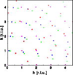
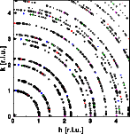
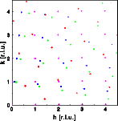
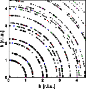

Powder diffraction: few crystals

Powder diffraction
Few crystals
Powder pattern
Preferred orientation
Goto
Contents
The first set of images shows a single crystal at random orientations and its corresponding diffraction pattern.Just as the crystal is rotated by a random angle, the diffraction pattern calculated for this crystal is rotated by the same angle.
The next set of images shows a 'powder' composed from 4 single crystals in random orientation (left) and the corresponding diffraction pattern (middle). The individual diffraction patterns plotted in the same color as the corresponding crystal start to add up to rings of reflections. With just four reflection its difficult though to recognize the rings. The right image shows a diffraction pattern of 40 single crystal grains (black). The colored spots are the peaks from the 4 grain 'powder' shown in the middle image. Now the powder rings are clearly visible. To get a larger picture just click on the corresponding image.
 



A technical note: The diffraction pattern at the right hand side was calculated from the sum of intensities calculated for the four individual crystals at the left hand. This addition corresponds to the incoherent diffraction by individual crystals.